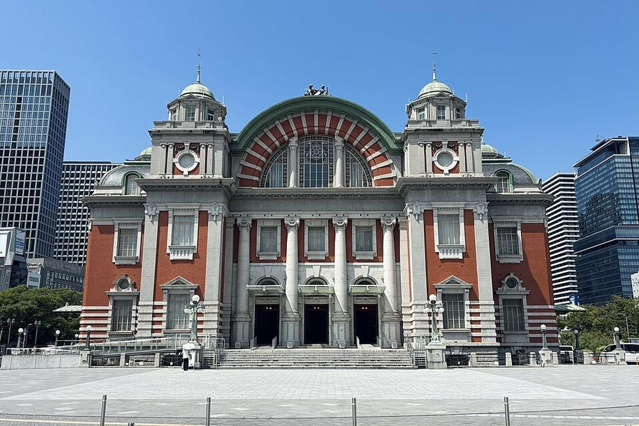
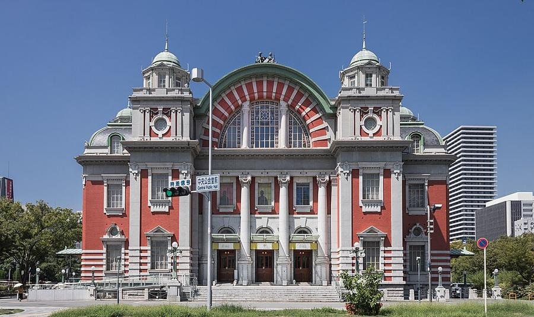
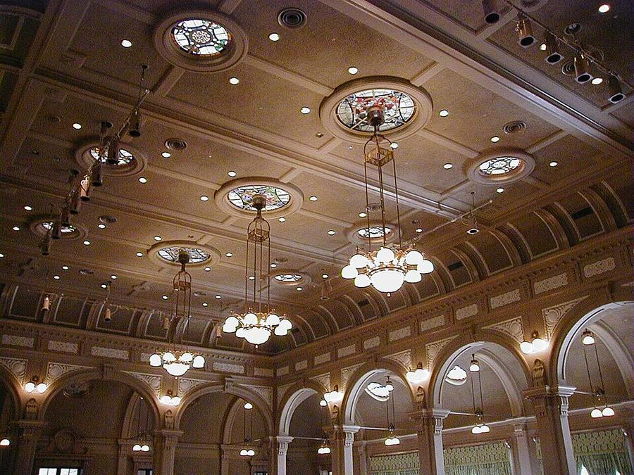

2Nakanoshima: общественный зал 1918 года









Nakanoshima - узкий остров между реками Dojima и Tosabori, деловой центр Осаки начала XX века. Главное здание - Центральный общественный зал из красного кирпича (1918). Его построили на пожертвование одного горожанина, биржевого маклера Iwamoto Einosuke. С 2002 года - важное культурное достояние страны.
На восточном конце острова - парк Nakanoshima (1891, первый городской парк Осаки) с розарием на ~310 сортов, вход свободный. Спокойная прогулка у воды, от отеля ~15 мин пешком.
| Часы | 9:30-21:30. Свободно: выставка в подвале (до 20:00) и холл 1 этажа, если большой зал не занят. Остальные залы - только экскурсии |
|---|---|
| Вход | снаружи и подвал бесплатно; розарий бесплатно |
| Выходные | 4-й вторник месяца (27.10) |
| Наши даты | открыто 24-26.10 |
| На месте | 30-40 мин |
| Дождь | ⛅ часть под крышей, в дождь - частично |
Источник часов и цен: osaka-chuokokaido.com (офиц.), city.osaka.lg.jp
Как добраться от отеля
- От отеля пешком ~15 мин на юг через Kitashinchi, или метро Midosuji (красная) 1 остановка до Yodoyabashi + 5 мин.
Рядом


Фото: Wikimedia Commons, автор и лицензия под каждым. Поезда: Yahoo!乗換案内 на 24-26.10.2026, пешие отрезки: OSRM. Часы и цены проверены 24.10.2026 03:16 JST. ← ко всем местам